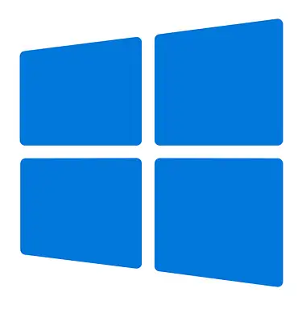
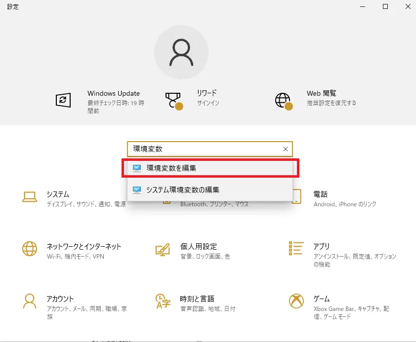
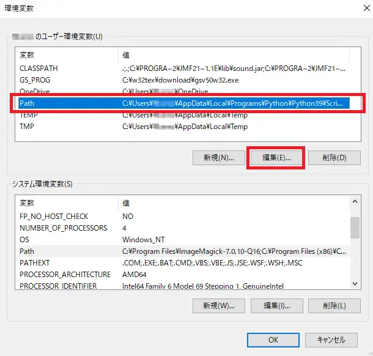
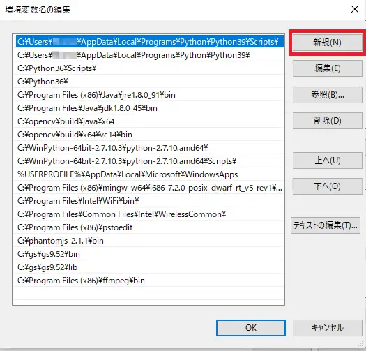

A. 環境変数の設定
パスの通し方
セクション1.2でインストールする際は「add Python 3.x to PATH」にチェックを入れた方が良いと書いた。 ここでは、そのチェックを忘れた場合に手動で環境変数の設定を行う手順を示す。 環境変数の設定方法はコマンドプロンプトからSETコマンド等を用いて設定するか、 GUIから操作するかの2通り存在する。 ここでは、GUIから操作手順を示す。 コマンドプロンプトから行う場合は失敗したときに、 元の状態に復元が出来なかったり、復元の為のバックアップ準備が面倒であるため ここでは紹介しない。 （失敗しない自信があるならSETで設定するのが一番早い。）
まず、windowsスタートボタンを右クリックし、 「設定」をクリックする。 設定ウィンドウの中に検索欄が存在するのでそこに「環境変数」と入力する。 「環境変数を編集」という検索結果の候補が出るので、それを選択する。

「ユーザーの環境変数」のPath項目を選択し、「編集」ボタンを押す。

「新規(N)」ボタンを押し、Pythonをインストールしたディレクトリを入力する。

以下の2つのディレクトリを登録する。また、XXXの部分は人によって異なる。
- XXX\Python\Python39\
- XXX\Python\Python39\Scripts\